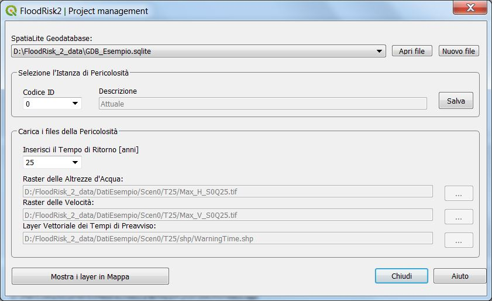

Project Management¶
La finestra Project Management consente di caricare o creare un nuovo geodatabase per il progetto. Il geodatabase serve come contenitore dei dati di input. Sotto è possibile vedere un esempio di finestra con la scelta del geodatabase e la lista dei file di input.

L’utente può scegliere il nome dello Spatialite geodatabase (* .sqlite). In caso di un nuovo progetto, occorre prima creare un nuovo geodatabase utilzzando il tasto “Nuovo file” Per un progetto esistente, occorre scegliere il relativo geodatabase con il tasto “Apri file”.
Una volta scelto il geodatabase, è possibile caricare i dati.
I dati relativi alla pericolosità sono raggruppati per istanze, dove le istanze rappresentano singole situationi: per esempio l’istanza 0 rappresenta la situatione corrente, l’istanza n.1 può rappresentare una nuova pericolosità ridotta dopo un intervento di mitigatione.
Una volta scelta l’istanza corrente, è possibile caricare i dati della pericolosità per differenti tempi di ritorno. Nel geodatabase sono salvati i path di ogni ed i relativi dati della instanza e del tempo di ritorno.
Per un dato tempo di ritorno la pericolosità consiste in tre file:
layer raster delle altezze d’acqua
layer raster delle velocità
layer vettoriale dei tempi di preavviso
Cliccando il tasto “Mostra i layer in Mappa” è possibile visualizzare in QGIS i layer che fanno parte del progetto.